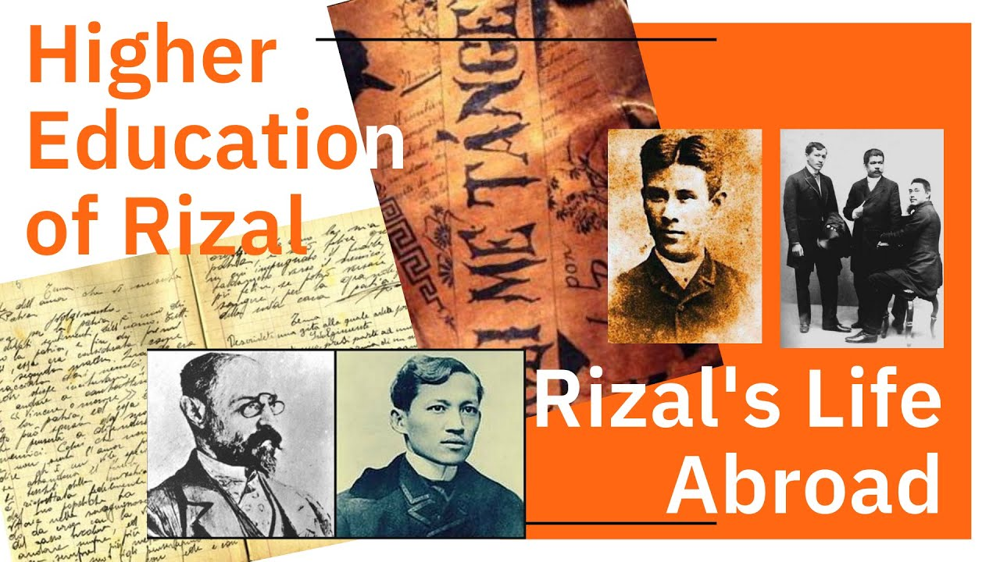
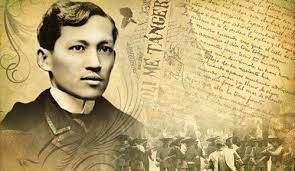
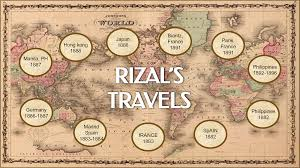
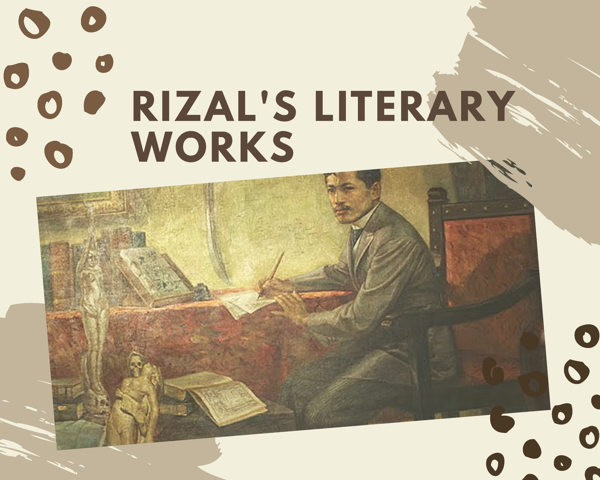
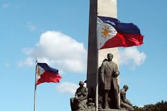
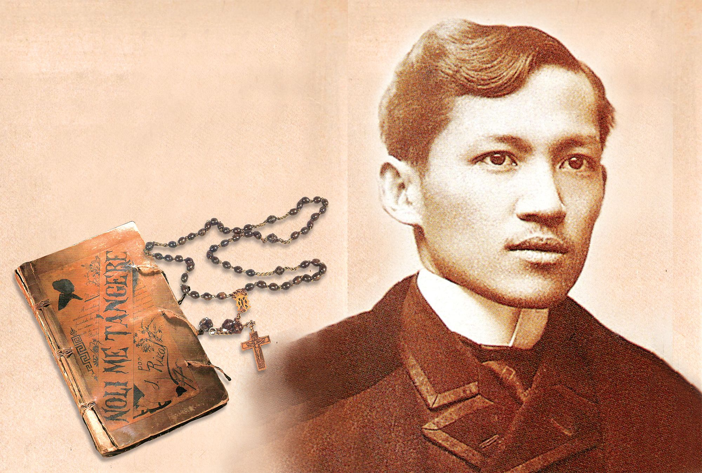

Early Education: José Rizal, the Philippine national hero, received his early education from his mother, who taught him to read and write at a young age

Rizal Legacy: Rizal's legacy encompasses his profound impact on Philippine society through his writings, activism, and martyrdom.

Travels: Rizal's travels across Europe and Asia broadened his perspective on colonialism, nationalism, and cultural diversity.

Literary Works: Rizal's literary works, including novels like "Noli Me Tangere" and "El Filibusterismo," are central to Philippine literature and history.

Rizal Nationalism: Rizal's nationalism emphasized the importance of education, unity, and peaceful resistance in achieving Philippine independence.

José Protasio Rizal Mercado y Alonso Realonda, commonly known as José Rizal